New & Noteworthy
- EMF Ecore Model search Page
Model Search is accessible from anywhere in Eclipse workbench by typing [Ctrl+H]
Different query combinations:
- Textual Queries For Ecore
- Textual Queries For Ecore Results
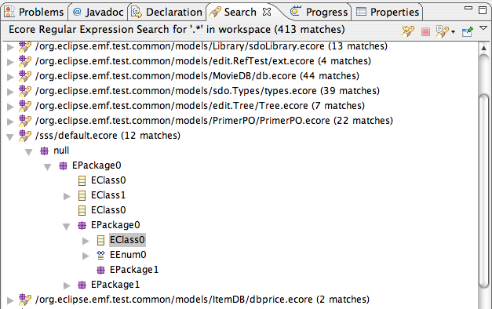
- Textual Queries For UML2
- Textual Queries For UML2 Results
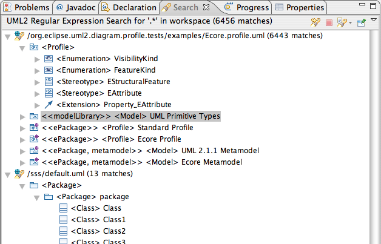
- OCL Queries For Ecore
- OCL Queries Results For Ecore
- OCL Queries For UML2
- OCL Queries Results For UML2

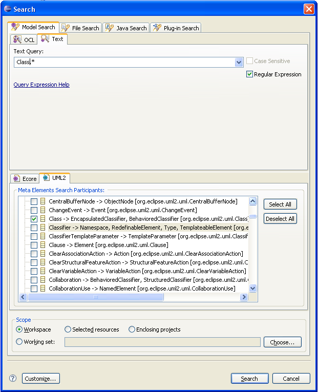
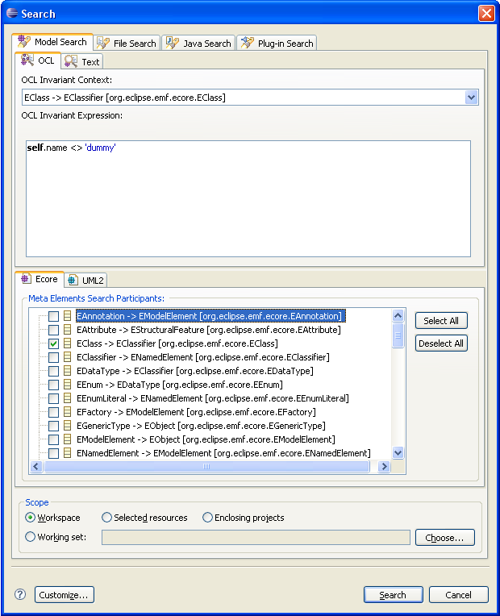
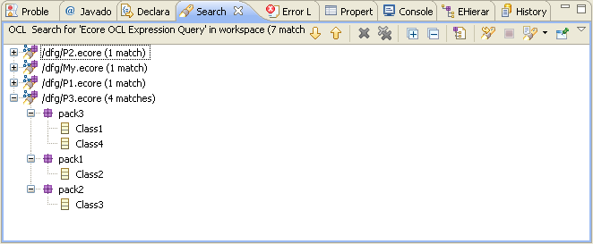
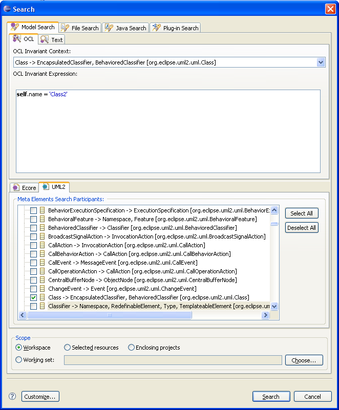
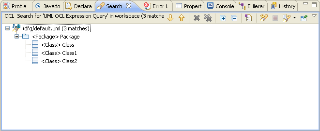
- EReferences to EClass or EDataType
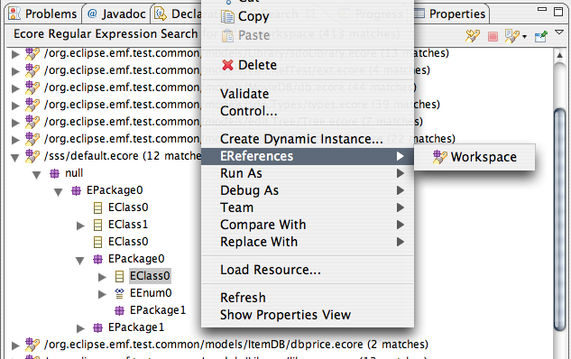
Gives user results in the Search View as :
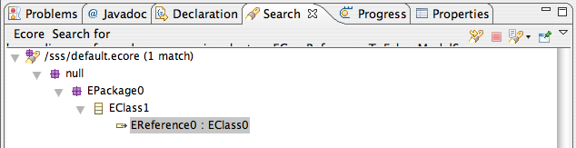
- EClass Filtered Selection Dialog
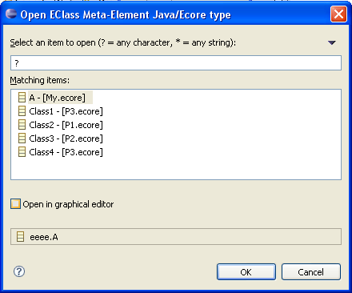
- EPackage Filtered Selection Dialog
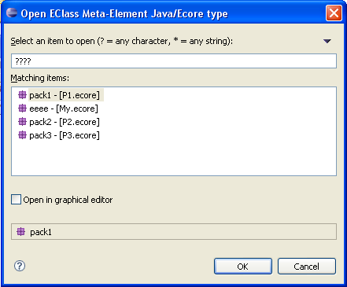
- UML2 Class Filtered Selection Dialog
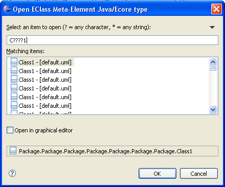
- UML2 Package Filtered Selection Dialog
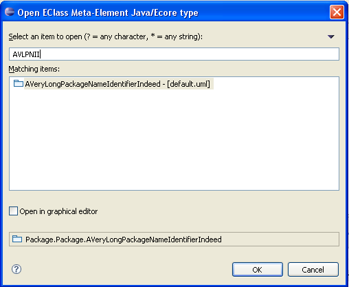